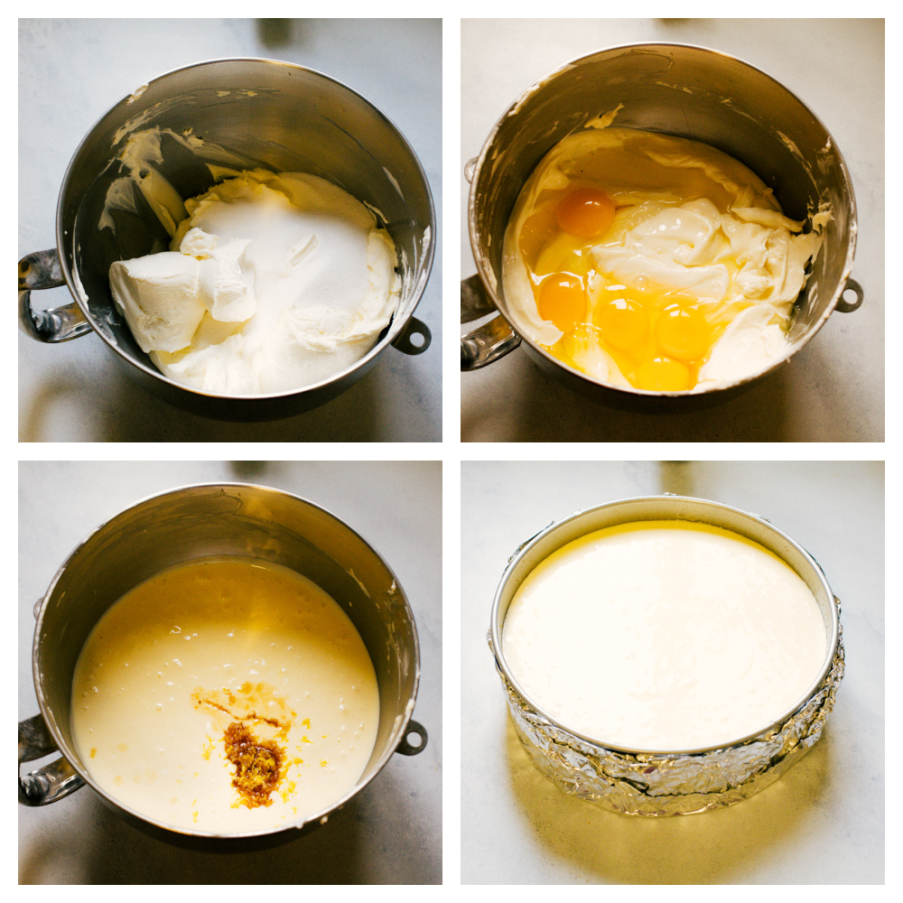
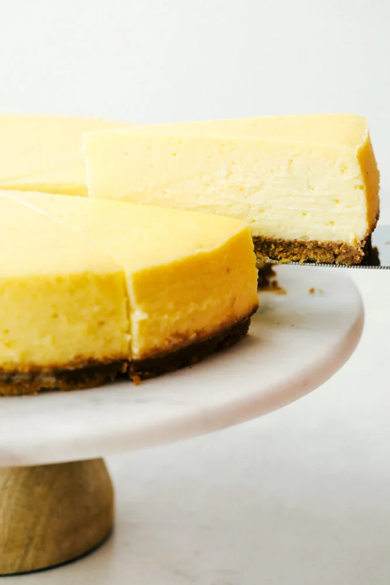

Prep: Preheat oven to 325. Prepare your springform pan by spraying with cooking spray, placing a parchment round on the bottom, and spraying the top of the parchment with cooking spray. Combine: Mix graham cracker crumbs, sugar, and melted butter together. This should resemble damp sand. Press: Pour your crumb mixture into the prepared springform pan and press evenly into the pan. You can use the bottom of a flat glass or a flat measuring cup to really press it in well and get a nice, even crust. Cook: Bake for 10 minutes. Cool: Allow cooling completely.
 Whether there is a crack or not in your New York Cheesecake will not affect the taste at all, this is all about being pleasing to the eye. When I am eating cheesecake, it really does not matter to me how it looks. These are just some great tips to help try and avoid the cracks. Cream: Add your softened cream cheese to the mixing bowl of your stand mixer and beat with a paddle at medium/high speed for about 1 minute. Scrape down the sides and bottom of the bowl and beat for a few seconds more. Add: Pour the sugar and sour cream into the mixer and mix at medium/low speed until just combined. Scrape the bowl again and mix 10 seconds. Eggs: Crack the eggs into the bowl and beat on low speed until combined, about 30 seconds-1 minute. Scrape the bowl again. Flavor: Add vanilla and lemon zest. Beat until just combined. At this point your batter should be smooth and fairly runny. Prep the Pan for Baking Water prep: Using 18 inch heavy-duty aluminum foil, wrap the outside of your springform pan with 4 sheets of foil. You can use regular foil, but it may take a couple more sheets to ensure the water does not get into your pan. Situate: Place your wrapped pan in a deep roasting pan. You can alternatively use a baking sheet, so long as the sides are about 2 inches deep. Pour the batter: Add your cheesecake batter to the springform pan. Baking the Cheesecake Water: Using very hot water, add water to the baking sheet/ until thee is about 1 ½ inch of water around the springform pan. On a rack in the lower 3rd of the oven, carefully move your pan into the oven. Cook: Bake at 325 degrees Fahrenheit for 1-1 ½ hours. After about an hour of baking, check the cheesecake’s consistency. A slight jiggle of the pan (while still in the oven) should tell you if it’s ready or needs more time. The cheesecake should be jiggly, but not liquid. If it seems very liquidy still, give it 15 more minutes and check it again. Cool: Once the cheesecake is firm, yet jiggly, turn the oven off but leave the cheesecake in the oven for another hour or so, until the oven has cooled down. Resist the temptation to open the oven during this time! The purpose of this step is to allow the cheesecake to cool slowly as the oven cools. Doing this will prevent it from cracking, as one of the biggest reasons cheesecakes crack is the drastic temperature change going from the hot oven into the much cooler kitchen. Remove: Once the oven and the cheesecake are cooled, remove from the oven and carefully remove the foil lining the pan. Refrigerate: Chill in the fridge for at least 6 hours. Release: Before serving, run a knife around the edge of the pan to ensure an easy release when the springform is removed. Top it: Top with desired toppings and enjoy!
https://therecipecritic.com/new-york-cheesecake/
Easy to understand, but too much words
https://www.allrecipes.com/recipe/135201/new-york-cheesecake/
have information grouped well, have hierarchy
https://www.browneyedbaker.com/new-york-style-cheesecake-recipe/
have detailed step by step image about how to make the cake
https://www.nope.ee/en/ice-cream
colorful, desgined well, illustration plays a great role in the site.
https://kodeimmersive.com/
animation works so well and immersive for people
https://intothetrenches.1917.movie/
The interactive part of this website is to nice if it can be a recipe, where you are like watching a tutorial, but not reading an article